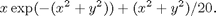
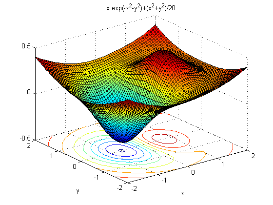
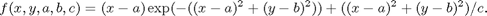
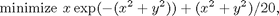
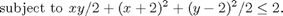
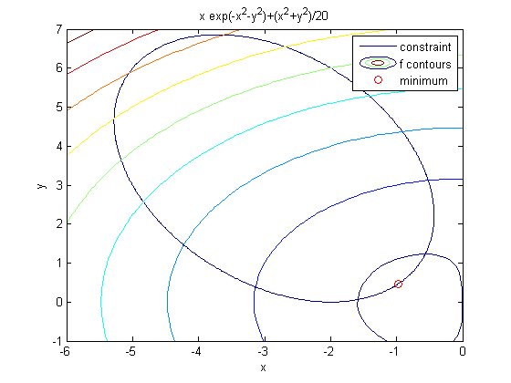
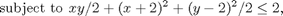

Optimization Toolbox™ のチュートリアル
このデモでは、2 つの非線形ソルバーとそのオプションを使用する方法を示します。
このデモで紹介するすべての原理は、FGOALATTAIN、FMINIMAX、LSQNONLIN、FSOLVE といった他の非線形ソルバーにも適用されます。
デモは、目的関数を最小化することから始まり、追加パラメーターによる同じ関数の最小化に進みます。その後、制約がある場合に目的関数を最小化する方法を示し、最後に、勾配またはヘッセ行列を与えるか、いくつかのオプションを変更することで、より精度の高い解や、より効率的な解を得る方法を示します。
目次
制約なしの最適化の例
以下の関数の最小値を求めるという問題を考えます。

この関数が最小化される位置を知るために、この関数をプロットします。
f = @(x,y) x.*exp(-x.^2-y.^2)+(x.^2+y.^2)/20; ezsurfc(f,[-2,2])
このプロットは、最小値が点 (-1/2,0) の近くにあることを示しています。
通常は、目的関数を MATLAB ファイルとして定義します。今のところ、この関数は、無名関数として定義できるほど単純です。
fun = @(x) f(x(1),x(2));
以下の解において推定します。
x0 = [-.5; 0];
fminunc の既定の大規模アルゴリズムを使用しないように最適化オプションを設定します。このアルゴリズムでは、目的関数の勾配を提供しなければならないからです。
options = optimset('LargeScale','off');
ソルバーによる計算時に反復回数を表示します。
options = optimset(options,'Display','iter');
制約なしの非線形最小化関数 fminunc を呼び出します。
[x, fval, exitflag, output] = fminunc(fun,x0,options);
First-order
Iteration Func-count f(x) Step-size optimality
0 3 -0.3769 0.339
1 6 -0.379694 1 0.286
2 9 -0.405023 1 0.0284
3 12 -0.405233 1 0.00386
4 15 -0.405237 1 3.17e-005
5 18 -0.405237 1 3.35e-008
Local minimum found.
Optimization completed because the size of the gradient is less than
the default value of the function tolerance.
ソルバーが、以下において解を見つけました。
uncx = x
uncx =
-0.6691
0.0000
この解での関数値は以下のとおりです。
uncf = fval
uncf = -0.4052
このデモでは、関数評価の回数を効率の尺度として使用します。関数評価の合計回数は以下のとおりです。
output.funcCount
ans =
18
追加パラメーターを使用した制約なしの最適化
特別なパラメーターを追加引数として目的関数に渡します。これを行う 2 つの方法を紹介します。MATLAB ファイルを使用するという方法と、入れ子関数を使用するという方法です。
前の節からの目的関数を考えます。

この関数を以下のように (a,b,c) でパラメーター化します。

この関数は、元の目的関数をシフトおよびスケーリングしたバージョンです。
方法 1: MATLAB ファイル関数
bowlpeakfun という MATLAB ファイルの目的関数が以下のように定義されていると仮定します。
type bowlpeakfun
function y = bowlpeakfun(x, a, b, c) %BOWLPEAKFUN Objective function for parameter passing in TUTDEMO. % Copyright 2008 The MathWorks, Inc. % $Revision: 1.1.4.13.2.1 $ $Date: 2010/07/29 21:28:57 $ y = (x(1)-a).*exp(-((x(1)-a).^2+(x(2)-b).^2))+((x(1)-a).^2+(x(2)-b).^2)/c;
パラメーターを定義します。
a = 2; b = 3; c = 10;
MATLAB ファイルに対する無名関数ハンドルを作成します。
f = @(x)bowlpeakfun(x,a,b,c)
f =
@(x)bowlpeakfun(x,a,b,c)
fminunc を呼び出して、最小値を見つけます。
x0 = [-.5; 0]; options = optimset('LargeScale','off'); [x, fval] = fminunc(f,x0,options)
Local minimum found.
Optimization completed because the size of the gradient is less than
the default value of the function tolerance.
x =
1.3639
3.0000
fval =
-0.3840
方法 2: 入れ子関数
目的関数を入れ子関数として実現する以下の関数を考えます。
type nestedbowlpeak
function [x,fval] = nestedbowlpeak(a,b,c,x0,options)
%NESTEDBOWLPEAK Nested function for parameter passing in TUTDEMO.
% Copyright 2008 The MathWorks, Inc.
% $Revision: 1.1.4.13.2.1 $ $Date: 2010/07/29 21:28:57 $
[x,fval] = fminunc(@nestedfun,x0,options);
function y = nestedfun(x)
y = (x(1)-a).*exp(-((x(1)-a).^2+(x(2)-b).^2))+((x(1)-a).^2+(x(2)-b).^2)/c;
end
end
この方法では、パラメーター (a,b,c) を nestedfun というネスト目的関数が認識できます。外側の関数 nestedbowlpeak は fminunc を呼び出し、目的関数 nestedfun を渡します。
パラメーター、初期推定値、およびオプションを定義します。
a = 2; b = 3; c = 10; x0 = [-.5; 0]; options = optimset('LargeScale','off');
最適化を実行します。
[x,fval] = nestedbowlpeak(a,b,c,x0,options)
Local minimum found.
Optimization completed because the size of the gradient is less than
the default value of the function tolerance.
x =
1.3639
3.0000
fval =
-0.3840
両方の方法で同一の結果が得られることがわかります。したがって、どちらでも都合の良い方を使用できます。
制約付き最適化の例: 不等式
以下のような制約のある上記の問題を考えます。


この制約は、傾いた楕円の内部です。傾いた楕円と一緒にプロットされた目的関数の等高線を見てください。
f = @(x,y) x.*exp(-x.^2-y.^2)+(x.^2+y.^2)/20; g = @(x,y) x.*y/2+(x+2).^2+(y-2).^2/2-2; ezplot(g,[-6,0,-1,7]) hold on ezcontour(f,[-6,0,-1,7]) plot(-.9727,.4685,'ro'); legend('constraint','f contours','minimum'); hold off
このプロットは、楕円内の目的関数の最小値が楕円の右下付近にあることを示しています。プロットしたばかりの最小値を計算します。以下の解において推定します。
x0 = [-2; 1];
最適化オプションを設定します。内点法アルゴリズムを使用し、反復ごとに結果の表示をオンにします。
options = optimset('Algorithm','interior-point','Display','iter');
ソルバーには、非線形制約関数からの 2 つの出力が必要です。第 1 の出力は非線形不等式、第 2 の出力は非線形等式に関するものです。このため、両方の出力を提供するために、deal 関数を使用して制約を記述します。
gfun = @(x) deal(g(x(1),x(2)),[]);
非線形制約付きソルバーを呼び出します。線形の等式、不等式、または境界が存在しないため、これらの引数として [ ] を渡します。
[x,fval,exitflag,output] = fmincon(fun,x0,[],[],[],[],[],[],gfun,options);
First-order Norm of
Iter F-count f(x) Feasibility optimality step
0 3 2.365241e-001 0.000e+000 1.972e-001
1 6 1.748504e-001 0.000e+000 1.734e-001 2.260e-001
2 10 -1.570560e-001 0.000e+000 2.608e-001 9.347e-001
3 14 -6.629160e-002 0.000e+000 1.241e-001 3.103e-001
4 17 -1.584082e-001 0.000e+000 7.934e-002 1.826e-001
5 20 -2.349124e-001 0.000e+000 1.912e-002 1.571e-001
6 23 -2.255299e-001 0.000e+000 1.955e-002 1.993e-002
7 26 -2.444225e-001 0.000e+000 4.293e-003 3.821e-002
8 29 -2.446931e-001 0.000e+000 8.100e-004 4.035e-003
9 32 -2.446933e-001 0.000e+000 1.999e-004 8.126e-004
10 35 -2.448531e-001 0.000e+000 4.004e-005 3.289e-004
11 38 -2.448927e-001 0.000e+000 4.036e-007 8.156e-005
Local minimum found that satisfies the constraints.
Optimization completed because the objective function is non-decreasing in
feasible directions, to within the default value of the function tolerance,
and constraints were satisfied to within the default value of the constraint tolerance.
この問題の解が以下において見つかりました。
x
x = -0.9727 0.4686
この解での関数値は以下のとおりです。
fval
fval = -0.2449
関数評価の合計回数は以下のとおりでした。
Fevals = output.funcCount
Fevals =
38
不等式制約は、この解において満たされます。
[c, ceq] = gfun(x)
c =
-2.4608e-006
ceq =
[]
c(x) が 0 に近いため、この制約は "アクティブ" です。つまり、解に影響を及ぼします。この制約なしの解が以下において見つかり、
uncx
uncx =
-0.6691
0.0000
制約なしの目的関数が以下であることがわかったことを思い出してください。
uncf
uncf = -0.4052
この制約は解を移動させ、目的を以下だけ増やしました。
fval-uncf
ans =
0.1603
制約付き最適化の例: ユーザー指定の勾配
勾配をユーザーが指定すれば、最適化問題をより効率的かつ正確に解くことができます。このデモでは、これを実行する方法を示します。再び、不等式制約付き問題を解きます。
f(x) の勾配を fmincon に提供するために、目的関数を MATLAB ファイルの形式で記述します。
type onehump
function [f,gf] = onehump(x)
% ONEHUMP Helper function for Tutorial for the Optimization Toolbox demo
% Copyright 2008-2009 The MathWorks, Inc.
% $Revision: 1.1.4.13.2.1 $ $Date: 2010/07/29 21:28:57 $
r = x(1)^2 + x(2)^2;
s = exp(-r);
f = x(1)*s+r/20;
if nargout > 1
gf = [(1-2*x(1)^2)*s+x(1)/10;
-2*x(1)*x(2)*s+x(2)/10];
end
制約とその勾配は、MATLAB ファイル tiltellipse に含まれています。
type tiltellipse
function [c,ceq,gc,gceq] = tiltellipse(x)
% TILTELLIPSE Helper function for Tutorial for the Optimization Toolbox demo
% Copyright 2008-2009 The MathWorks, Inc.
% $Revision: 1.1.4.13.2.1 $ $Date: 2010/07/29 21:28:57 $
c = x(1)*x(2)/2 + (x(1)+2)^2 + (x(2)-2)^2/2 - 2;
ceq = [];
if nargout > 2
gc = [x(2)/2+2*(x(1)+2);
x(1)/2+x(2)-2];
gceq = [];
end
以下の解において推定します。
x0 = [-2; 1];
最適化オプションを設定します。比較のために同じアルゴリズムを引き続き使用します。
options = optimset('Algorithm','interior-point');
また、目的関数と制約関数で勾配情報を使用するようにオプションを設定します。メモ:これらのオプションをオンにしなければなりません。そうしないと、勾配情報が無視されてしまいます。
options = optimset(options,'GradObj','on','GradConstr','on');
fmincon では、有限差分を使用して勾配を推定する必要がないため、今回は関数計算回数が少なくなるはずです。
options = optimset(options,'Display','iter');
ソルバーを呼び出します。
[x,fval,exitflag,output] = fmincon(@onehump,x0,[],[],[],[],[],[], ...
@tiltellipse,options);
First-order Norm of
Iter F-count f(x) Feasibility optimality step
0 1 2.365241e-001 0.000e+000 1.972e-001
1 2 1.748504e-001 0.000e+000 1.734e-001 2.260e-001
2 4 -1.570560e-001 0.000e+000 2.608e-001 9.347e-001
3 6 -6.629161e-002 0.000e+000 1.241e-001 3.103e-001
4 7 -1.584082e-001 0.000e+000 7.934e-002 1.826e-001
5 8 -2.349124e-001 0.000e+000 1.912e-002 1.571e-001
6 9 -2.255299e-001 0.000e+000 1.955e-002 1.993e-002
7 10 -2.444225e-001 0.000e+000 4.293e-003 3.821e-002
8 11 -2.446931e-001 0.000e+000 8.100e-004 4.035e-003
9 12 -2.446933e-001 0.000e+000 1.999e-004 8.126e-004
10 13 -2.448531e-001 0.000e+000 4.004e-005 3.289e-004
11 14 -2.448927e-001 0.000e+000 4.036e-007 8.156e-005
Local minimum found that satisfies the constraints.
Optimization completed because the objective function is non-decreasing in
feasible directions, to within the default value of the function tolerance,
and constraints were satisfied to within the default value of the constraint tolerance.
前の例で fmincon による勾配の推定が成功したため、現在の例での反復も同様です。
この問題の解が以下において見つかりました。
xold = x
xold =
-0.9727
0.4686
この解での関数値は以下のとおりです。
minfval = fval
minfval = -0.2449
関数評価の合計回数は以下のとおりでした。
Fgradevals = output.funcCount
Fgradevals =
14
これを、勾配を使用しない場合の関数評価回数を比較します。
Fevals
Fevals =
38
既定の終了許容誤差の変更
今回は

既定の終了基準 (options.TolX と options.TolFun) をオーバーライドすることで、同じ制約付き問題をより正確に解きます。引き続き勾配を使用します。fmincon の内点法アルゴリズムの既定値は、options.TolX = 1e-10、options.TolFun = 1e-6 です。
2 つの既定終了基準 (X と fval に対する終了許容誤差) をオーバーライドします。
options = optimset(options,'TolX',1e-15,'TolFun',1e-8);
ソルバーを呼び出します。
[x,fval,exitflag,output] = fmincon(@onehump,x0,[],[],[],[],[],[], ...
@tiltellipse,options);
First-order Norm of
Iter F-count f(x) Feasibility optimality step
0 1 2.365241e-001 0.000e+000 1.972e-001
1 2 1.748504e-001 0.000e+000 1.734e-001 2.260e-001
2 4 -1.570560e-001 0.000e+000 2.608e-001 9.347e-001
3 6 -6.629161e-002 0.000e+000 1.241e-001 3.103e-001
4 7 -1.584082e-001 0.000e+000 7.934e-002 1.826e-001
5 8 -2.349124e-001 0.000e+000 1.912e-002 1.571e-001
6 9 -2.255299e-001 0.000e+000 1.955e-002 1.993e-002
7 10 -2.444225e-001 0.000e+000 4.293e-003 3.821e-002
8 11 -2.446931e-001 0.000e+000 8.100e-004 4.035e-003
9 12 -2.446933e-001 0.000e+000 1.999e-004 8.126e-004
10 13 -2.448531e-001 0.000e+000 4.004e-005 3.289e-004
11 14 -2.448927e-001 0.000e+000 4.036e-007 8.156e-005
12 15 -2.448931e-001 0.000e+000 4.000e-009 8.230e-007
Local minimum found that satisfies the constraints.
Optimization completed because the objective function is non-decreasing in
feasible directions, to within the selected value of the function tolerance,
and constraints were satisfied to within the default value of the constraint tolerance.
新しい許容誤差によって生じる差をより正確に知るために、解における小数をより多く表示することを選択します。
format long
オプティマイザーが、以下において解を見つけました。
x
x = -0.972742227363546 0.468569289098342
これを、以前の値を比較します。
xold
xold = -0.972742694488360 0.468569966693330
変化は以下のようになります。
x - xold
ans = 1.0e-006 * 0.467124813385844 -0.677594988729435
この解での関数値は以下のとおりです。
fval
fval = -0.244893137879894
解が以下のように改良されました。
fval - minfval
ans = -3.996450220755676e-007
(これが負である理由は、新しい解の方が小さいからです)
関数評価の合計回数は以下のとおりでした。
output.funcCount
ans =
15
既定の許容誤差は使用しないで、ユーザー指定の勾配を使用して問題を解いた場合の関数評価の回数と、上記の回数を比較します。
Fgradevals
Fgradevals =
14
ユーザー指定のヘッセ行列を使用した制約付き最適化の例
勾配だけでなくヘッセ行列も与えると、ソルバーの精度と効率がさらに向上します。
fmincon の内点ソルバーは、ヘッセ行列を別個の関数 (目的関数の一部ではなく) として受け取ります。ヘッセ行列関数 H(x,lambda) は、ラグランジアンのヘッセ行列を評価しなければなりません。この用語の定義は、ユーザー ガイドを参照してください。
ソルバーは、値 lambda.ineqnonlin と lambda.eqlin を計算します。ヘッセ行列関数が、これらの値を使用する方法をソルバーに指示します。
この問題には、不等式制約が 1 つしかありません。したがって、ヘッセ行列は以下のようになります。
type hessfordemo
function H = hessfordemo(x,lambda)
% HESSFORDEMO Helper function for Tutorial for the Optimization Toolbox demo
% Copyright 2008-2009 The MathWorks, Inc.
% $Revision: 1.1.4.13.2.1 $ $Date: 2010/07/29 21:28:57 $
s = exp(-(x(1)^2+x(2)^2));
H = [2*x(1)*(2*x(1)^2-3)*s+1/10, 2*x(2)*(2*x(1)^2-1)*s;
2*x(2)*(2*x(1)^2-1)*s, 2*x(1)*(2*x(2)^2-1)*s+1/10];
hessc = [2,1/2;1/2,1];
H = H + lambda.ineqnonlin(1)*hessc;
このヘッセ行列を使用するには、オプションを適切に設定しなければなりません。
options = optimset('Algorithm','interior-point','GradConstr','on',... 'GradObj','on','Hessian','user-supplied','HessFcn',@hessfordemo);
許容誤差が既定値に戻されています。 今回は、関数計算回数が少ないはずです。
options = optimset(options,'Display','iter');
ソルバーを呼び出します。
[x,fval,exitflag,output] = fmincon(@onehump,x0,[],[],[],[],[],[], ...
@tiltellipse,options);
First-order Norm of
Iter F-count f(x) Feasibility optimality step
0 1 2.365241e-001 0.000e+000 1.972e-001
1 3 5.821325e-002 0.000e+000 1.443e-001 8.728e-001
2 5 -1.218829e-001 0.000e+000 1.007e-001 4.927e-001
3 6 -1.421167e-001 0.000e+000 8.486e-002 5.165e-002
4 7 -2.261916e-001 0.000e+000 1.989e-002 1.667e-001
5 8 -2.433609e-001 0.000e+000 1.537e-003 3.486e-002
6 9 -2.446875e-001 0.000e+000 2.057e-004 2.727e-003
7 10 -2.448911e-001 0.000e+000 2.068e-006 4.191e-004
8 11 -2.448931e-001 0.000e+000 2.001e-008 4.218e-006
Local minimum found that satisfies the constraints.
Optimization completed because the objective function is non-decreasing in
feasible directions, to within the default value of the function tolerance,
and constraints were satisfied to within the default value of the constraint tolerance.
今回は、反復回数が少なく、また異なっていました。
この問題の解が以下において見つかりました。
x
x = -0.972742246093537 0.468569316215571
この解での関数値は以下のとおりです。
fval
fval = -0.244893121872758
関数評価の合計回数は以下のとおりでした。
output.funcCount
ans =
11
この回数を、既定の許容誤差を同じにして、勾配のみを使用した場合の評価回数と比較します。
Fgradevals
Fgradevals =
14